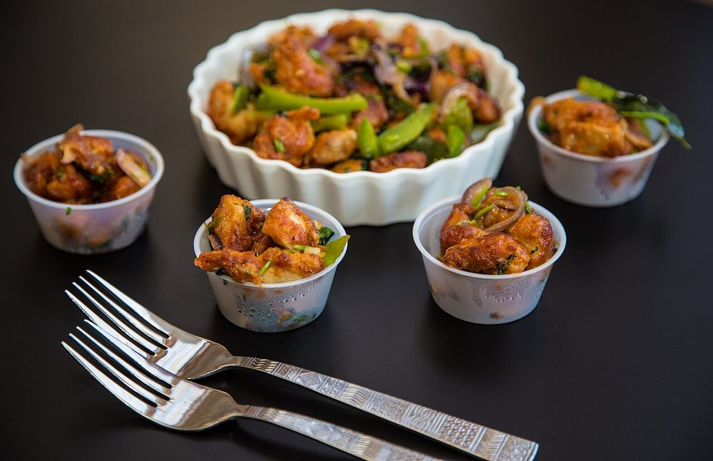

Chicken Manchurian
fried chicken in a dark garlic and soy gravy, the dish that built Indian Chinese

Contains: gluten, egg, soy
Checked against the ingredient list for ten allergens: milk, egg, fish, crustaceans, tree nuts, peanuts, sesame, mustard, soy and gluten. Brands vary, so read the label on anything new to you.
Ingredients
Quantities for 4.
- 600g boneless, 3cm cubes Chicken
- 5 tbsp Cornflour
- 3 tbsp Maida
- 1, beaten Eggs
- 2 tbsp, finely chopped Garlicthe dish is built on garlic; do not reduce this
- 1 tbsp, finely chopped Ginger
- 6, whites and greens separated Spring Onion
- 3 tbsp Soy Sauce
- 2 tbsp Vinegar
- 4, slit Green Chilli
- 1 tsp Black Pepper
- 1 tsp Sugar
- 500ml for deep frying, plus 3 tbsp for the gravy Neutral Oil
- 250ml Water
- to taste Salt
Cookware
stovetop, kadhai
Before you start
- Invented in Kolkata, not Manchuria. Nelson Wang is generally credited with it at a Bombay hotel in the 1970s.
- Fry the chicken twice. The second fry is what keeps it crisp once the gravy is on it.
Method
- Toss the chicken with the egg, 3 tbsp cornflour, the maida, salt and pepper into a thick coating.
- Deep fry on medium until pale gold, 4 minutes. Rest 5 minutes, then fry again on high for 1 minute.The double fry is the whole technique. One fry and it goes soggy the moment it meets the sauce.
- In 3 tbsp oil, fry the garlic, ginger, green chilli and spring onion whites hard for 1 minute.Hard and fast. Garlic browned slowly turns bitter.
- Add the soy sauce, vinegar, sugar and water. Bring to a boil.
- Slake the remaining cornflour in cold water and stir it in until the sauce turns glossy and coats a spoon.
- Fold in the chicken, toss for 30 seconds only, and finish with the spring onion greens.Thirty seconds. Any longer and the crust you worked for is gone.
Storage
Best within the hour, which is true of anything fried and sauced. It keeps 2 days refrigerated; reheat in a hot pan, not a microwave.
Nutrition Good estimate
High protein: 37 g a serving, 30% of the calories
| Per serving269 g | Per 100 g | |
|---|---|---|
| Calories | 497 kcal | 186 kcal |
| Protein | 36.9 g | 14 g |
| Carbohydrate | 33.5 g | 12 g |
| of which sugars | 2.1 g | 1 g |
| Fibre | 1.8 g | 1 g |
| Fat | 23.3 g | 9 g |
| of which saturated | 3.4 g | 1 g |
| of which unsaturated | 18.0 g | 7 g |
Worked out from the listed quantities; most of the ingredient list could be weighed. Estimated from raw ingredients using USDA FoodData Central. Cooking changes are not modelled, and added salt is excluded, so sodium is not given.
Written and checked against sources, not cooked in a test kitchen. Times, yields, allergens and nutrition are worked out rather than measured, so use your own judgement on doneness and on storing. More in About.